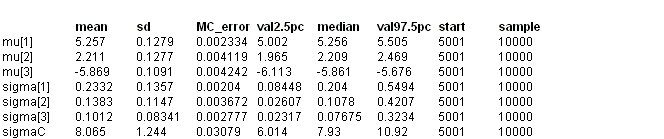

![[otrees0]](otrees0.bmp) Orange Trees: Non-linear growth
Orange Trees: Non-linear growthcurve
This dataset was originally presented by Draper and Smith (1981) and reanalysed by Lindstrom and Bates (1990). The data Y ij consist of trunk circumference measurements recorded at time x j , j=1,...,7 for each of i = 1,..., 5 orange trees. We consider a logistic growth curve as follows:
Y ij ~ Normal( h ij , t c )
h ij = f i1
_______________
1 + f i2 exp( f i3 x j )
q i1 = log( f i1 )
q i2 = log( f i2 + 1)
q i3 = log( -f i3 )
The BUGS code is as follows
model {
for (i in 1:K) {
for (j in 1:n) {
Y[i, j] ~ dnorm(eta[i, j], tau.C)
eta[i, j] <- phi[i, 1] / (1 + phi[i, 2] * exp(phi[i, 3] * x[j]))
}
phi[i, 1] <- exp(theta[i, 1])
phi[i, 2] <- exp(theta[i, 2]) - 1
phi[i, 3] <- -exp(theta[i, 3])
for (k in 1:3) {
theta[i, k] ~ dnorm(mu[k], tau[k])
}
}
tau.C ~ dgamma(1.0E-3, 1.0E-3)
sigma.C <- 1 / sqrt(tau.C)
var.C <- 1 / tau.C
for (k in 1:3) {
mu[k] ~ dnorm(0, 1.0E-4)
tau[k] ~ dgamma(1.0E-3, 1.0E-3)
sigma[k] <- 1 / sqrt(tau[k])
}
}
Data ( click to open )
Inits ( click to open )
Results
The hybrid Metropolis algorithm is used to sample the theta parameters in this model. The step length used for this algorithm adapts for the first 4000 iterations and these samples are discarded from the summary statistics. A further 1000 update burn-in followed by 10000 updates gave the following parameter estimates:

The current point Metropolis algorithm is used to sample the theta parameters in this model. The Gaussian proposal distribution used for this algorithm adapts for the first 4000 iterations and these samples are discarded from the summary statistics. A further 1000 update burn-in followed by 10000 updates gave the following parameter estimates:
mean sd MC_error val2.5pc median val97.5pc start sample
mu[1] 5.254 0.1242 0.004513 5.002 5.258 5.488 5001 10000
mu[2] 2.22 0.1252 0.007917 1.994 2.216 2.469 5001 10000
mu[3] -5.861 0.1143 0.008563 -6.098 -5.86 -5.657 5001 10000
sigma[1] 0.2245 0.1235 0.00357 0.07706 0.1963 0.5306 5001 10000
sigma[2] 0.1342 0.1219 0.005743 0.02447 0.1009 0.4428 5001 10000
sigma[3] 0.1098 0.09349 0.005828 0.02354 0.08214 0.3591 5001 10000
sigma.C 8.025 1.216 0.03895 6.03 7.89 10.77 5001 10000
theta[1,1] 5.079 0.08832 0.007158 4.949 5.066 5.326 5001 10000
theta[1,2] 2.134 0.1542 0.01001 1.823 2.136 2.423 5001 10000
theta[1,3] -5.851 0.149 0.0126 -6.19 -5.849 -5.583 5001 10000
theta[2,1] 5.395 0.05096 0.003465 5.3 5.393 5.505 5001 10000
theta[2,2] 2.207 0.1245 0.008209 1.962 2.205 2.46 5001 10000
theta[2,3] -5.825 0.1015 0.007943 -6.028 -5.828 -5.624 5001 10000
theta[3,1] 5.079 0.09932 0.008296 4.945 5.06 5.356 5001 10000
theta[3,2] 2.187 0.1351 0.008393 1.915 2.188 2.447 5001 10000
theta[3,3] -5.908 0.1494 0.01298 -6.286 -5.89 -5.666 5001 10000
theta[4,1] 5.441 0.04836 0.003287 5.347 5.442 5.543 5001 10000
theta[4,2] 2.269 0.1395 0.009928 2.024 2.256 2.566 5001 10000
theta[4,3] -5.816 0.1021 0.008087 -6.008 -5.825 -5.591 5001 10000
theta[5,1] 5.291 0.06828 0.005157 5.174 5.284 5.438 5001 10000
theta[5,2] 2.299 0.1351 0.009323 2.05 2.295 2.589 5001 10000
theta[5,3] -5.907 0.1075 0.008937 -6.125 -5.903 -5.7 5001 10000